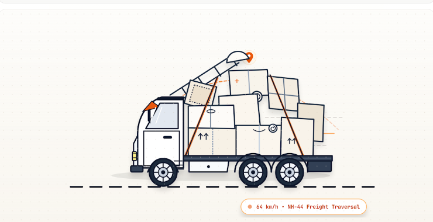

Corridor Active: Central Highway Freight Link / RT-VECTOR v2.9
Real–Time Heavy Freight
Vectorization
Hand-crafted kinetic telemetry tracking oversized payloads across nationwide transits with zero packet loss.

64 km/h • NH-44 Freight Traversal
Payload Weight
GWV SPEC
14.8 MT
Current Velocity
RADAR LOCK
64 km/h
Corridor Route
NAV // GPS
NH-44 Traversal
Chassis Status
Optimal